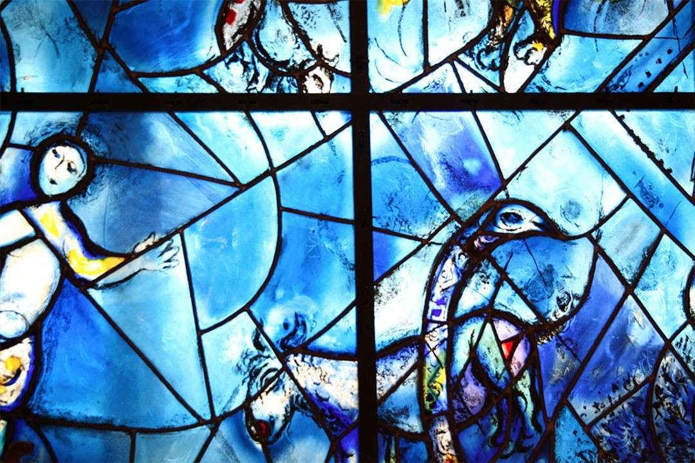

Despite Ongoing Crises, We Must Not Lose Sight of SDG 16, Hope for Global Peace
By Giovanni Bruna, Program Manager, SDSN
Achieving long-standing peace is imperative for the world’s prosperity. Yet today, as we commemorate the International Day of Living Together in Peace, it remains elusive. Maintaining peaceful societies remains a complex challenge, which at its foundation requires accepting individual differences and being able to recognize, respect, and appreciate others. The pursuit of peace is at the core of the UN’s mission and part of the 2030 Agenda for Sustainable Development, with SDG 16 aiming to “promote peaceful, just, and inclusive societies for sustainable development.”
For nearly eight decades, the UN has worked toward advancing multilateralism to overcome differences and global challenges. The International Day of Living Together in Peace aims to “regularly mobilize the efforts of the international community to promote peace, tolerance, inclusion, understanding, and solidarity, as well as uphold the desire to live and act together, united in differences and diversity, in order to build a sustainable world of peace, solidarity and harmony.” Today this ambitious and essential objective is more important than ever.
With a quarter of the global population living in conflict-affected countries, governments, civil society, and communities need to work together to resolve disputes. The UN Sustainable Development Solutions Network (SDSN) mobilizes global scientific and technological expertise to promote practical solutions to implement the 17 SDGs and actively supports multilateral efforts that promote peace and accelerate progress on SDG 16. The SDSN is playing several key roles that peer organizations and other stakeholders should also engage in to further the goal of global peace.
International non-profit organizations have a powerful role to play as conveners in support of strengthening multilateralism. For example, the SDSN coordinated The Lancet COVID-19 Commission, which launched in mid-2020 to assist governments, civil society, and UN institutions in responding effectively to the pandemic. Convening world-renowned experts across a number of disciplines, including epidemiology, humanitarian relief, global health diplomacy, and economics, the Commission’s final report calls “for actions to strengthen multilateralism, alongside actions to strengthen national health systems and preparedness plans to defend against future global health threats and achieve sustainable development.” As the foundation for peace, multilateralism can help reduce the likelihood of global shocks, as well as improve the international community’s resilience, including to future pandemics.
The international research community can also strengthen peacebuilding efforts through rigorous research on conflict and peace. Further research is also needed to look at how we measure concepts, such as peace and well-being, as these factors have important implications for decision making and public policies. To this end, the World Happiness Report, an annual survey and analysis on happiness and well-being as indicators of social and economic development, demonstrates that greater numbers of people are judging and measuring the success of their countries against the welfare of their citizens.
Access to education is also critical to achieving peace and effective democracy. It is a potent tool for shaping individuals’ minds, viewpoints, and skill sets, and has the power to galvanize political movements in support of conflict-free, just, and inclusive societies. Yet, far too many people lack access to quality education, and many people never pursue lifelong learning opportunities due to constraints of time, cost, and availability. A UN Educational, Scientific and Cultural Organization (UNESCO) report estimates that 244 million children and youth between the ages of 6 and 18 were still missing out on school in 2021. The SDG Academy is one example of how we can close this gap. The Academy creates and curates free and open educational resources on sustainable development, including courses related to issues of peace and justice, such as Ethics in Action, Human Rights, Human Wrongs, Laudato Si’: On Care for Our Common Home, and Environmental Security and Sustaining Peace. The knowledge presented in these courses encourages students to think differently about peace and justice and offers practical ways to support strong institutions and greater equality in our everyday lives.
The 2030 Agenda and other existing multilateral frameworks, norms, and mechanisms provide humanity with a blueprint to solve a myriad of issues plaguing societies worldwide. To address today’s geopolitical conflicts, the climate emergency, migration crises, and financial uncertainty, we must build effective and accountable institutions at all levels that support multilateral efforts for peace. Nelson Mandela, who devoted his life to the service of humanity and became one of the most recognized peacemakers of our time, once said: “Peace is not just the absence of conflict; peace is the creation of an environment where all can flourish, regardless of race, color, creed, religion, gender, class, caste, or any other social markers of difference.” In this regard, the thematic priorities and strategic goals of international organizations and partner stakeholders should continue to prioritize equity and human dignity – two universal values that are central to achieving the peaceful, inclusive, and sustainable future that humanity and the planet deserve.